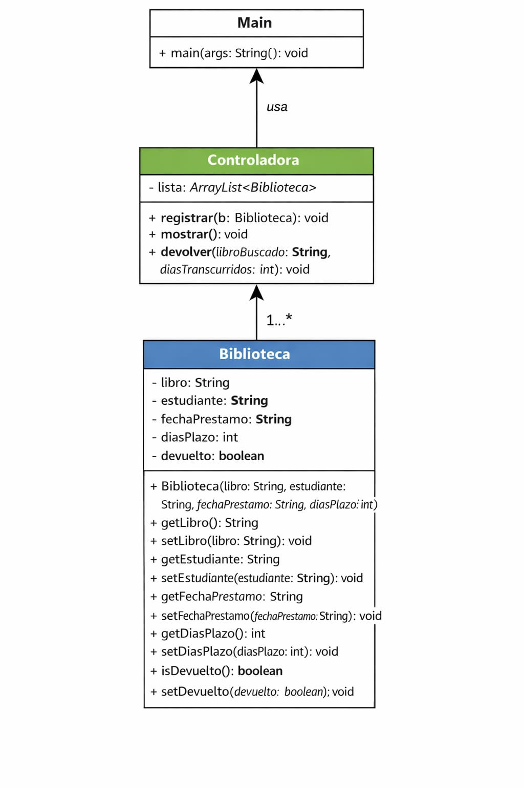
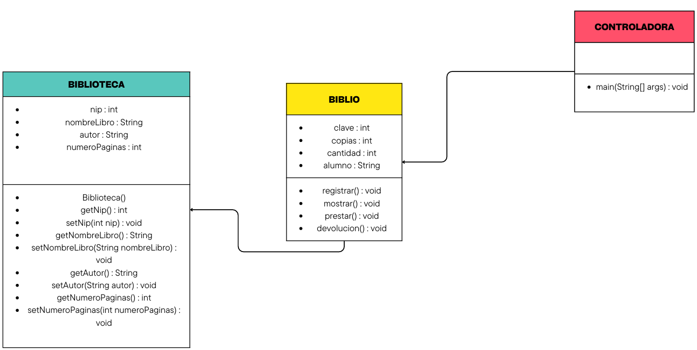
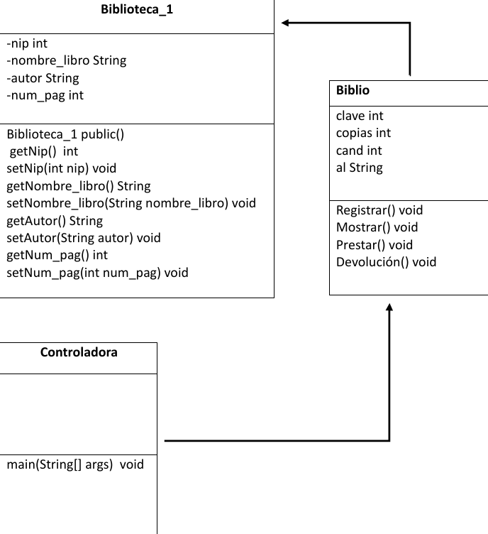
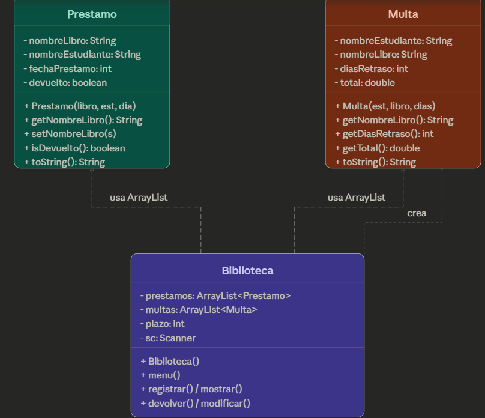
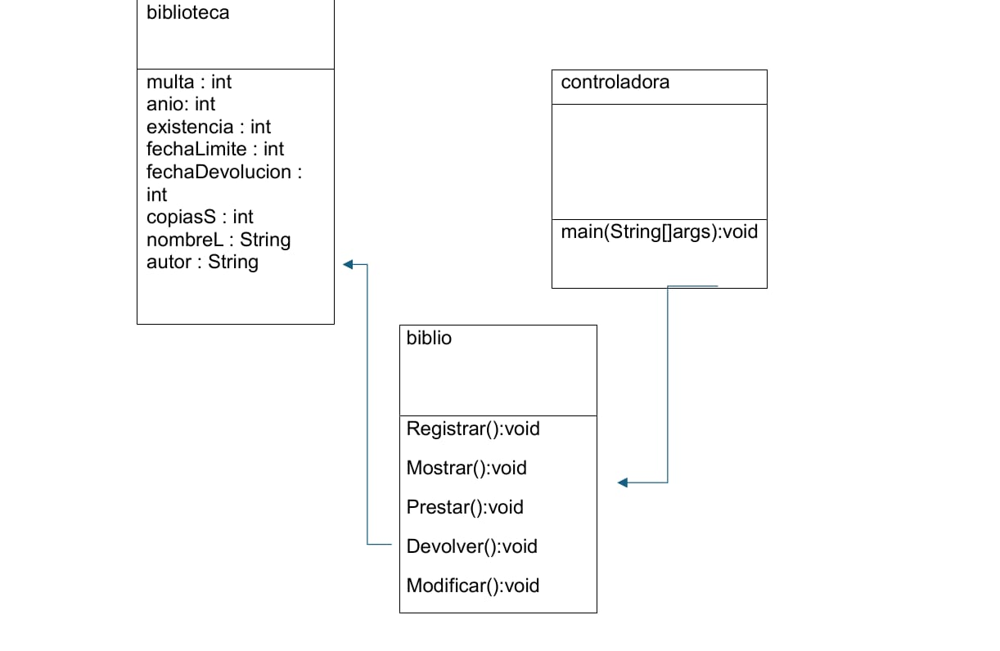

// estructura del código
Diagramas de Clases
Explora el diagrama UML de cada integrante. Haz clic en la imagen para verla en pantalla completa.
v0.0 · Versión Principal

v1.0 · Versión Raquel
// SUBE TU IMAGEN AQUÍ — cambia el src del <img>
v1.1 · Versión Carlos

v1.2 · Versión Jose

v1.3 · Versión Hector

v1.4 · Versión Jean Karlo

v1.5 · Versión Uriel
